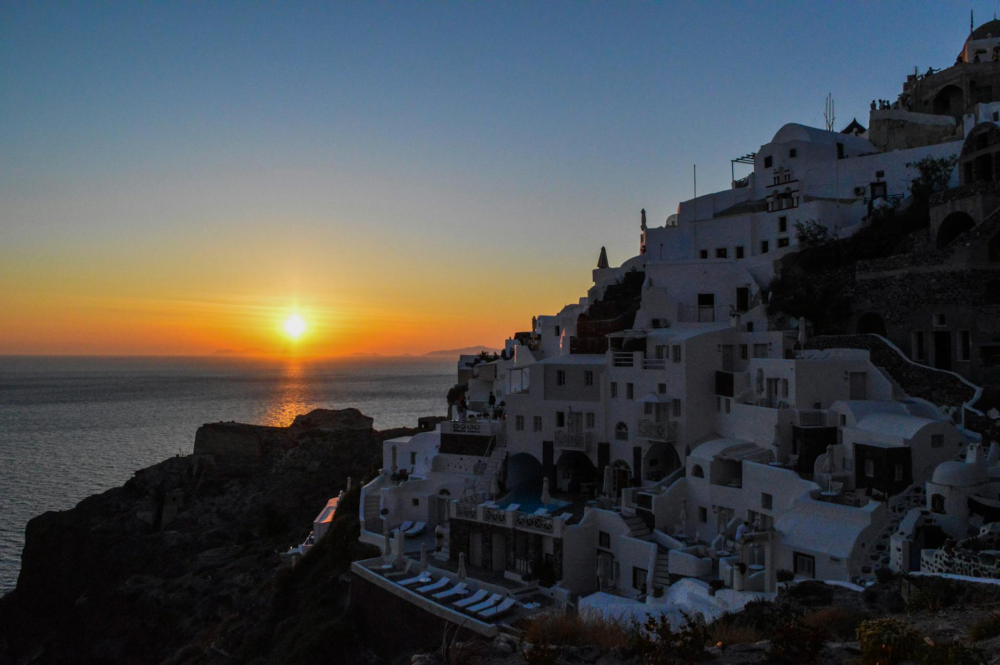

Santorini Sunsets: Greece’s Most Romantic Escape

Welcome to Santorini – A Dream in White and Blue
Perched above the shimmering Aegean Sea, Santorini is the definition of a postcard-perfect paradise. With its iconic whitewashed houses, sapphire domes, and rugged cliffs, this Greek island is a haven for honeymooners, travelers, and dreamers alike. But the real magic? The legendary Santorini sunset—one of the most breathtaking sights in the world.
Oia: The Ultimate Sunset Spot
Oia (pronounced “ee-ya”) is Santorini’s most famous village, and for good reason. When the sun begins to dip, the entire sky transforms into a canvas of pink, orange, and gold, casting a surreal glow over the island. The best spots to watch? Oia Castle offers panoramic views, but it gets packed early. For a quieter experience, grab a cocktail at Kastro Restaurant or find a hidden alley with a perfect vantage point.
Exploring Fira: The Beating Heart of Santorini
Fira, Santorini’s bustling capital, is where whitewashed buildings cling to dramatic cliffs overlooking the caldera. Stroll through its charming streets lined with boutiques, tavernas, and cozy cafés. Visit the Archaeological Museum to learn about Santorini’s volcanic past, or take a cable car ride down to the Old Port, where you can hop on a boat tour to the volcanic islands.
A Boat Trip to the Caldera and Hot Springs
One of the most unforgettable experiences in Santorini is a boat trip to the Nea Kameni Volcano and its natural hot springs. Hike to the volcanic crater for a lunar-like landscape with stunning views, then relax in the warm, mineral-rich waters of the hot springs. For the ultimate luxury, book a sunset catamaran cruise—it’s the perfect way to see the island from a different perspective.
Santorini’s Best Beaches: Red, Black, and White Sands
Unlike typical golden-sand beaches, Santorini’s volcanic origins have given it a unique coastline. Red Beach, near Akrotiri, is famous for its fiery red cliffs. Perissa and Kamari Beaches boast black volcanic sand, perfect for sunbathing and swimming. For a more secluded escape, head to White Beach, accessible only by boat.
Dining with a View: The Best Sunset Restaurants
Santorini’s food scene is as spectacular as its views. For a romantic dinner, Ambrosia in Oia offers candlelit tables overlooking the caldera, while Argo in Fira serves delicious seafood with stunning sunset vistas. Be sure to try fava purée, a Santorini specialty, and sip on Assyrtiko wine, made from local volcanic vineyards.
Final Thoughts: A Love Affair with Santorini
Santorini isn’t just a destination—it’s a feeling. From the mesmerizing sunsets to the charming cliffside villages, every moment here is pure magic. Whether you’re exploring ancient ruins, sailing across the caldera, or simply sipping wine as the sky turns gold, Santorini is a place that stays in your heart forever.